SEAN M. DAUGHERITY Architecture Portfolio - selected works
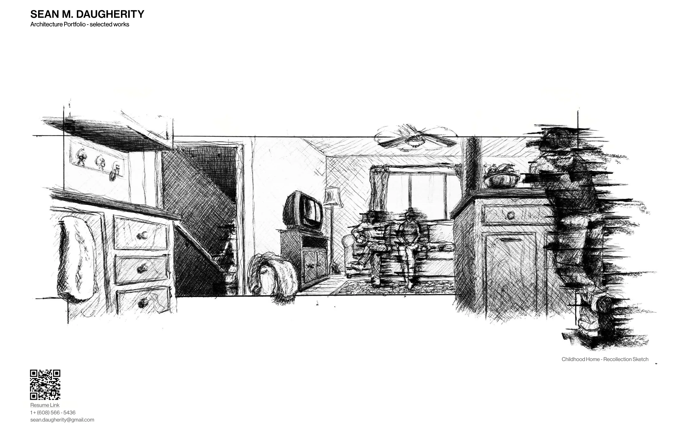
TABLE OF CONTENTS
Semester Studio Projects
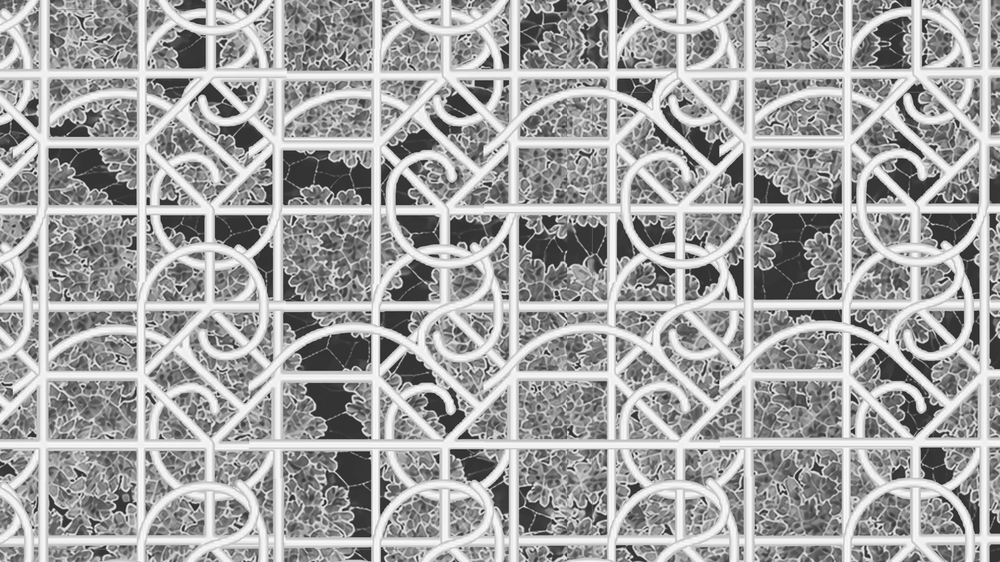
Spring 2026 - Luxury HotelPg. 01 - 04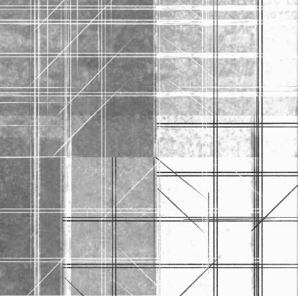
Fall 2024 - Community CenterPg. 05 - 07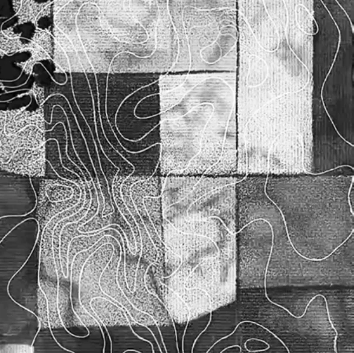
Fall 2023 - Conservation CenterPg. 08 - 10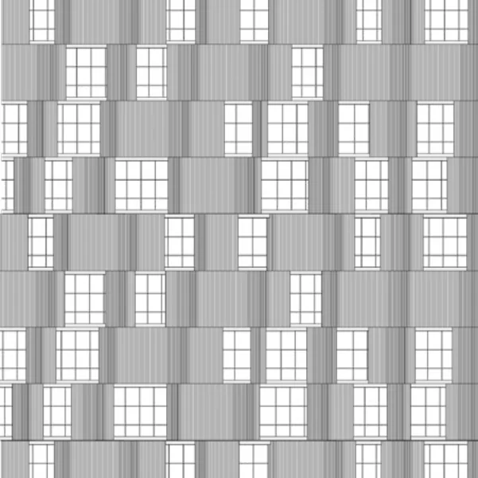
Spring 2025 - Refugee HousingPg. 11 - 12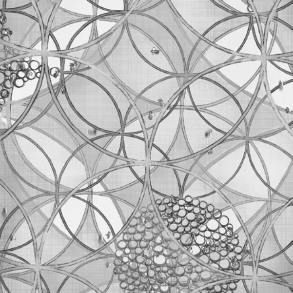
Fall 2023 - Public InstallationPg. 13 - 15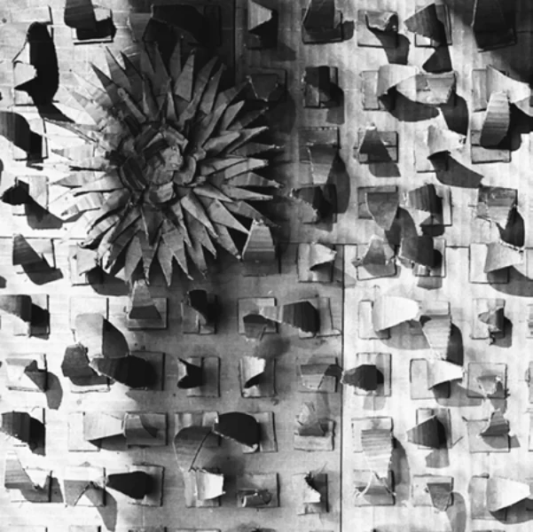
Spring 2023 - Public PavilionPg. 16 - 19Die Fabel - Luxury Hotel
502 - Rob Reinders & Kotaro Nakamura - Berlin, Germany
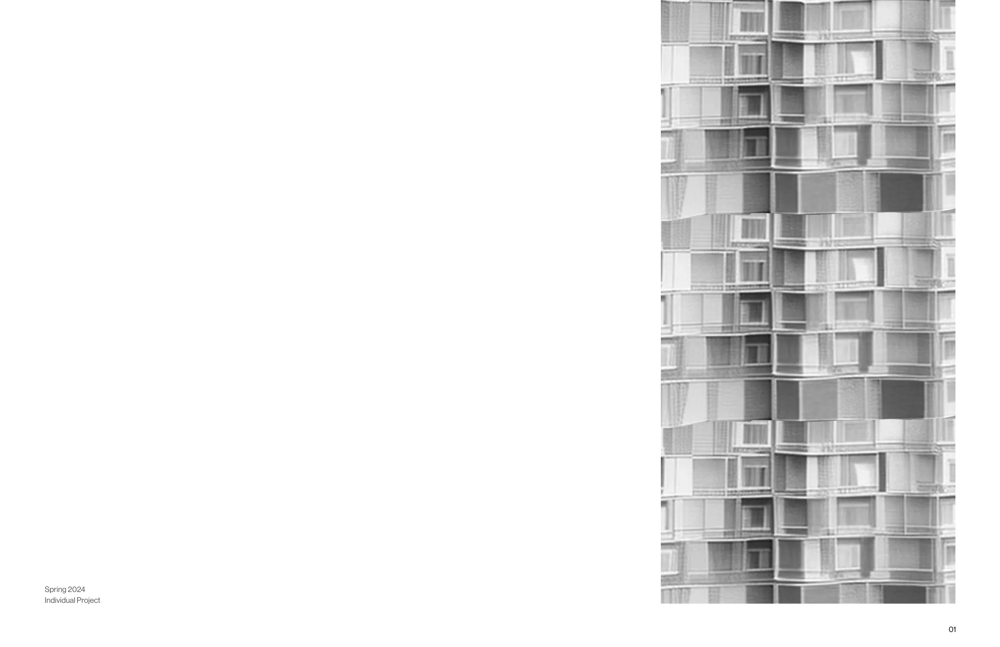
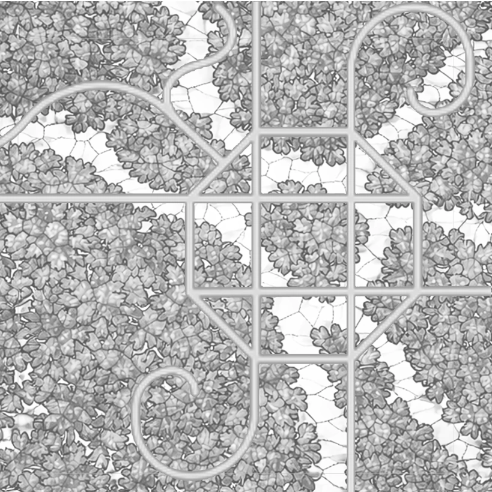
Die Fabel - Luxury Hotel
502 - Rob Reinders & Kotaro Nakamura - Berlin, Germany
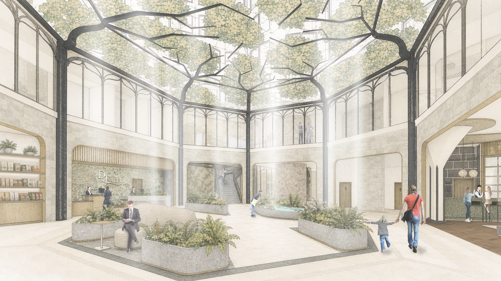
Die Fabel - Luxury Hotel
502 - Rob Reinders & Kotaro Nakamura - Berlin, Germany
Die Fabel - Luxury Hotel
502 - Rob Reinders & Kotaro Nakamura - Berlin, Germany
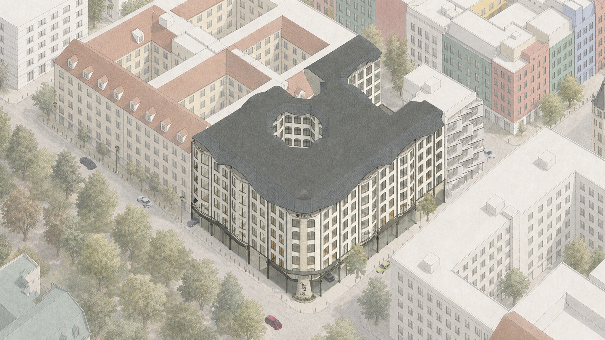
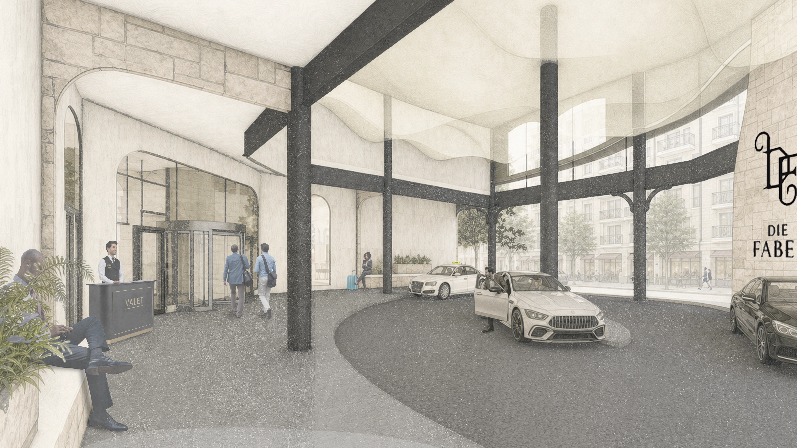
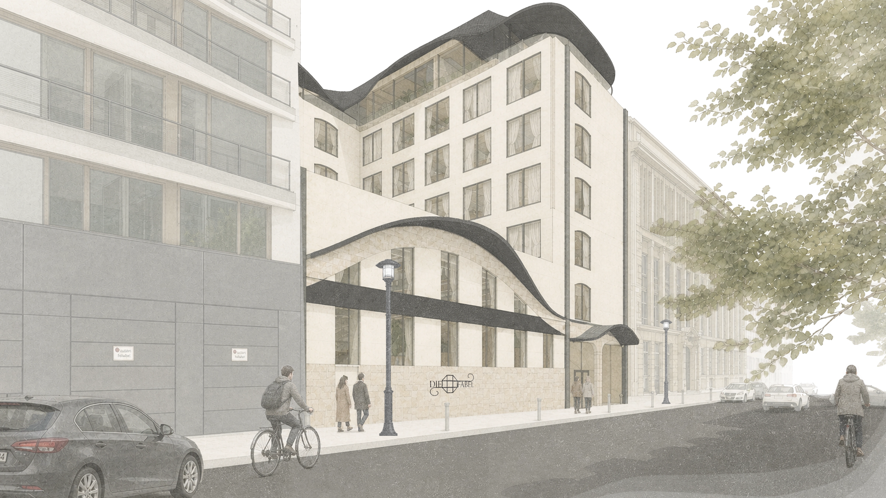
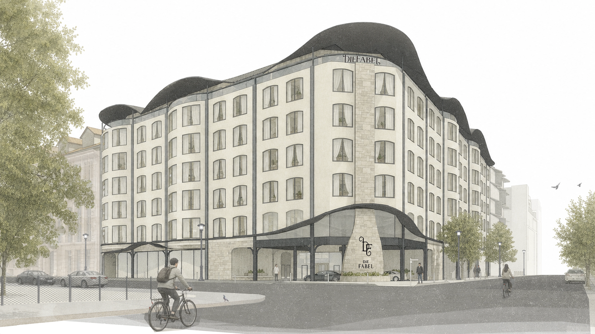
CARNEGIE LIBRARY REUSE & COMMUNITY CENTER
401 - Shelby Doyle - Marshalltown, IA
Through adaptive reuse and the addition of a large community center, the old Carnegie Public Library is reimagined to help the community and carry Andrew Carnegie's original intention of accessible public education.
Sitting in the heart of a once promising industrial town, the shell of the original Carnegie Public Library now acts as a storage shed for the city municipality.
Marshalltown, Iowa was an industrial hub for central Iowa in the early 20th century, but after its two major factories closed in the '80s, half the town's population found themselves unemployed. The city never quite recovered as drug abuse and crime rates became increasingly prevalent.
Unfortunately, many individuals are still dealing with the trauma of a struggling household, and the current state of poverty and drug afflictions are unmistakably clear.
After a major tornado struck Marshalltown in 2018, most of downtown sits in disrepair with many storefronts and restaurants boarded up. The dilapidated state of the city has had the largest impact on kids, as many come from struggling households that aren't receiving the resources they need because the school board can't afford to help.
The Carnegie Library renovation and Community Center addition aims to provide a safe space for the community to learn and interact together. This would ideally help adults and kids get off the street and into a stimulating environment that features a variety of activity spaces and resources geared towards building strong life skills.
The renovation of the Marshalltown Carnegie Library into an artist residency and community center aimed to revitalize and inspire the public through collaboration and access to a variety of creative spaces.
With the intention of preserving the frame of the original Carnegie Library, the 30,000 sqft addition had to complement the original Neoclassical style without copying it. The design uses a similar language of hierarchy, rhythm, and symmetry, but intervenes through modern material usage, irregular geometry, and current accessibility requirements.
Extending the original curve of the library to show the existing brick facade creates a welcoming intellectual environment for creatives. The remaining space becomes a multipurpose courtyard for community gathering.
05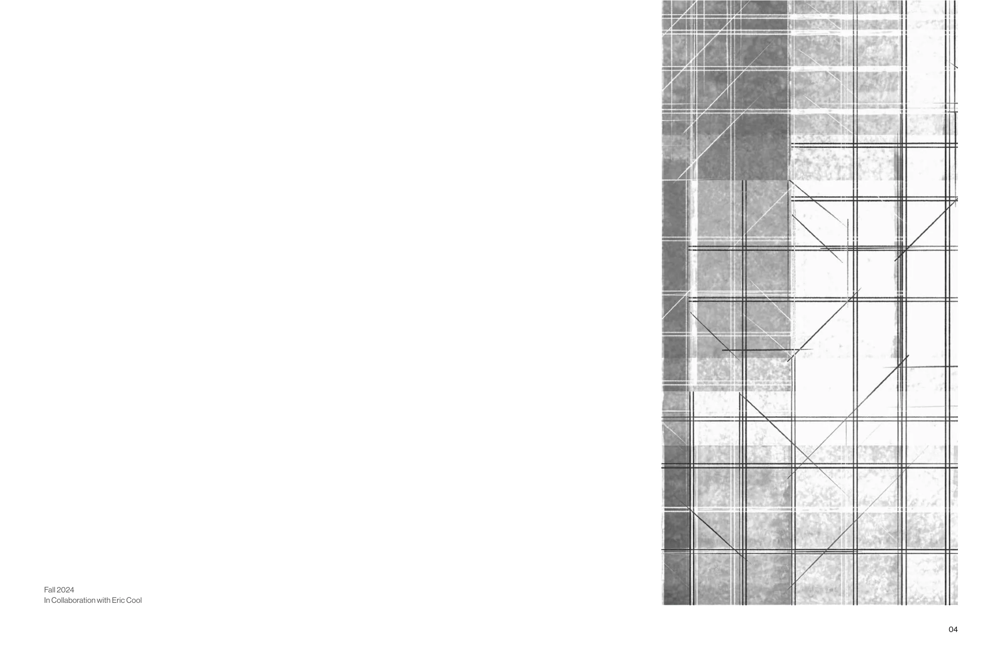
CARNEGIE LIBRARY REUSE & COMMUNITY CENTER
401 - Shelby Doyle - Marshalltown, IA
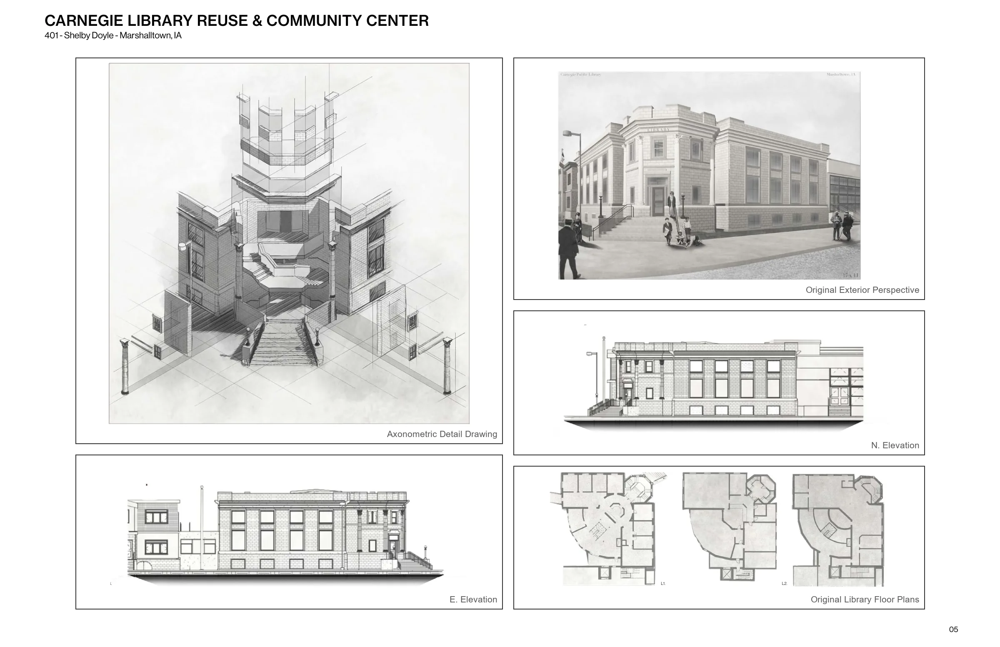
CARNEGIE LIBRARY REUSE & COMMUNITY CENTER
401 - Shelby Doyle - Marshalltown, IA
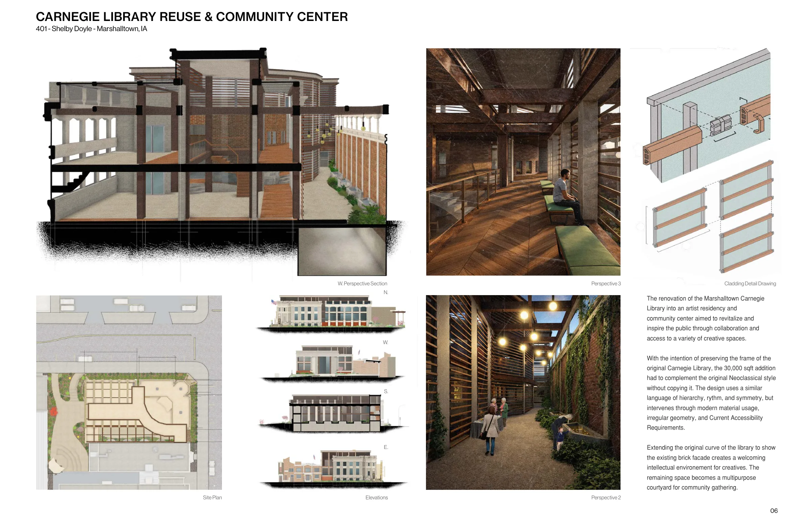
PRAIRIE REVIVAL - CONSERVATION CENTER
301 - Roman Chikerinets - McFarland Lake Park, IA
A retention swale and lookout vista to observe the natural rolling prairies of Iowa.
After guests pass through a series of immersive conservation spaces, they find themselves in the lowest topographic section of the park. By implementing a retention swale, guests are incentivized to return and experience the space seasonally. The utilization of local stone and wetland plants on site aim to improve biodiversity without impacting the natural topography or drainage.
The Conservation Center was designed to promote circulation and exploration while preserving the natural beauty of the area.
Tucked within the gentle landscape of rural Iowa, Prairie Revival maintains a harmonious relationship with the land, refusing to further terraform the region. While the land had been worked by farmers for over a century, Prairie Revival takes a more passive approach by letting nature take the lead, and potentially reintroducing key native species.
An internal central passage opens to the natural elements, giving guests a space to decompress and connect with nature from indoors.
The main atrium was designed to immerse the guests into the prairie and cast sunlight throughout the day.
By planting a shallow bed of lowlight prairie species inside, I created an infinity pool effect that blends the main atrium seamlessly into the surrounding prairie. One-way mirror glass allows for optimal viewing from the inside while not obstructing the landscape from an exterior perspective.
This multi-purpose atrium space was designed to isolate and absorb sound, allowing meetings, tours, parties and other social gatherings to enjoy the scenery.
08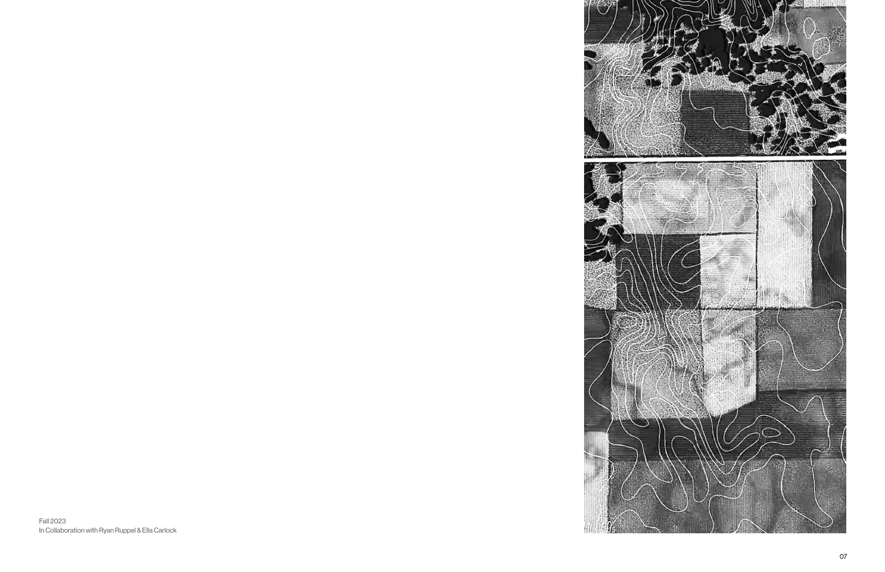
PRAIRIE REVIVAL - CONSERVATION CENTER
301 - Roman Chikerinets - McFarland Lake Park, IA
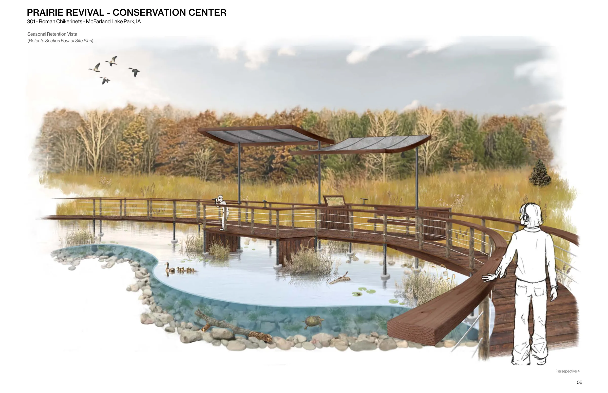
PRAIRIE REVIVAL - CONSERVATION CENTER
301 - Roman Chikerinets - McFarland Lake Park, IA
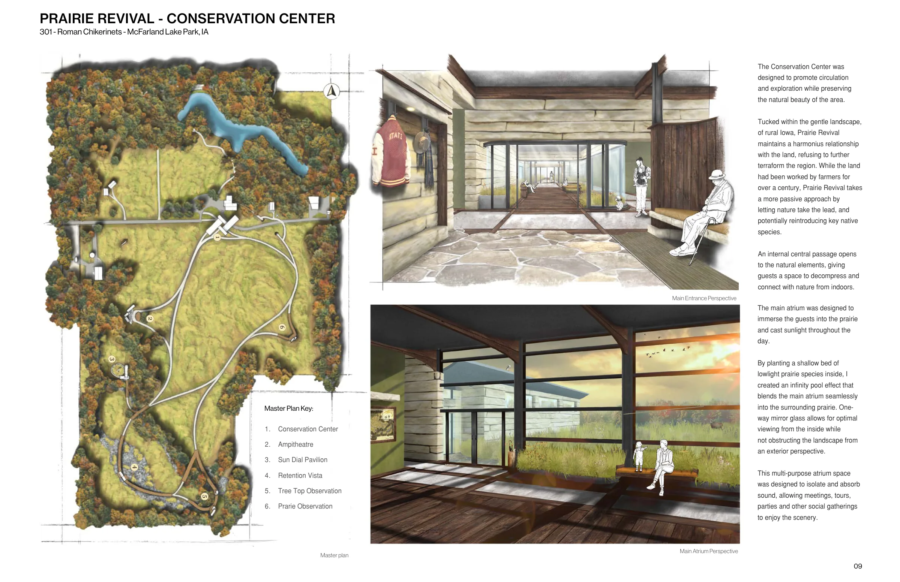
VERUM SANCTORUM - REFUGEE HOUSING
402 - Consuelo Nunez Ciuffa, Rome, IT
Verum Sanctorum is a sanctuary for the many refugees that come to Italy in search of asylum and employment.
Across the road from the ancient ruins of the Roman Forum and Colosseum sits a small overgrown plot of land isolated by an infamous wall from the fascist era.
Millions of unaware tourists pass by the site annually, as they rush to nearby landmarks, while many refugees linger in the area trying to sell small handmade trinkets. While these refugees are often viewed as intrusive or threatening, they come from unimaginable conditions with little identification or access to the resources they need. Verum Sanctorum utilizes the privacy of the site to house refugees temporarily and provide crucial support through Italian language courses, job application specialists, peer mentors, and documentation specialists.
11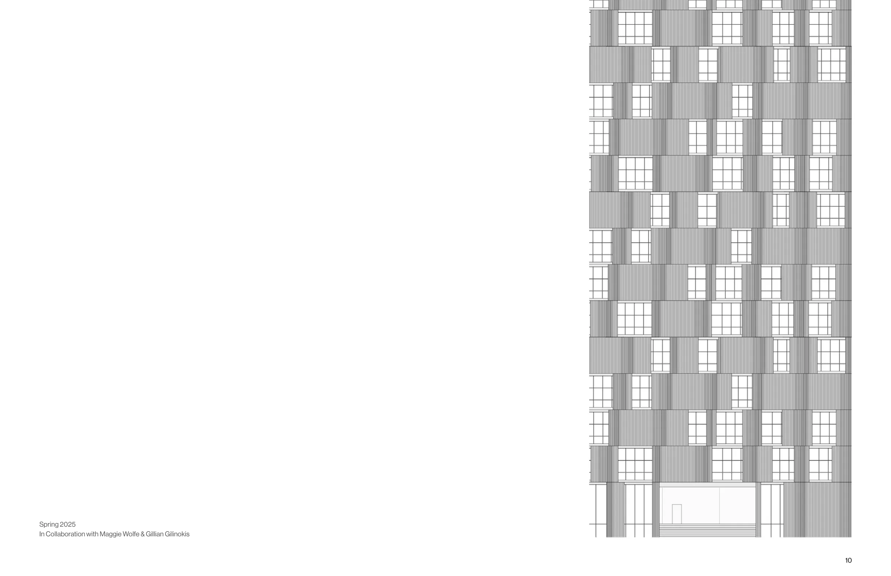
VERUM SANCTORUM - REFUGEE HOUSING
402 - Consuelo Nunez Ciuffa, Rome, IT
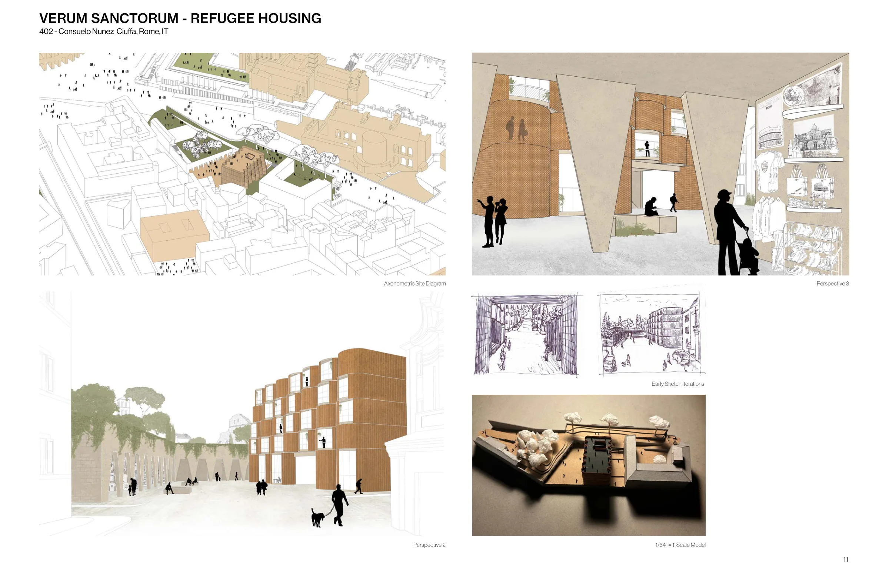
PRAIRIE FORWARD - PUBLIC INSTALLATION
301 - Roman Chikerinets - McFarland Lake Park, IA
An installation and bee habitat designed to slow down the public and provide awareness about the vital impact bees have on the ecosystem.
Iowa is one of the most important agricultural states in the United States, so most of the land has been cultivated leaving very few truly conserved areas in the state. The insects that rely on prairie flowers also help cultivate farm fields, meaning they are crucial to agriculture.
Upon visiting the park, I noticed one wildflower, Canadian Goldenrod, had a far greater ratio of bees to stem. Research showed that bees have a limited perception of the color spectrum, leaving them particularly more attracted to bright colors, like the colors of Goldenrod.
Inspired by the organic shape of Goldenrod and the geometric sequences found from the plants study, I designed a layered system of habitats to give the public a protected view of the bees that keep the prairie alive.
A thin yellow mesh attracts the bees to hollow wood cylinders for them to rest in. The mesh has small holes to allow for public viewing, while still holding off water droplets and birds.
13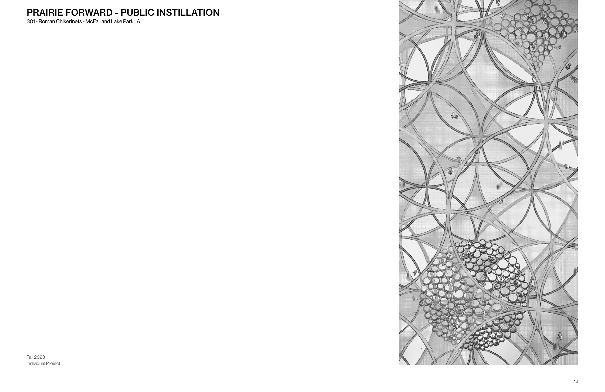
PRAIRIE FORWARD - PUBLIC INSTALLATION
301 - Roman Chikerinets - McFarland Lake Park, IA
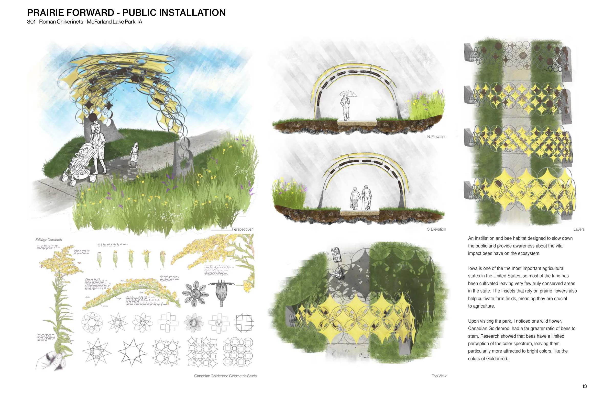
PRAIRIE FORWARD - PUBLIC INSTALLATION
301 - Roman Chikerinets - McFarland Lake Park, IA
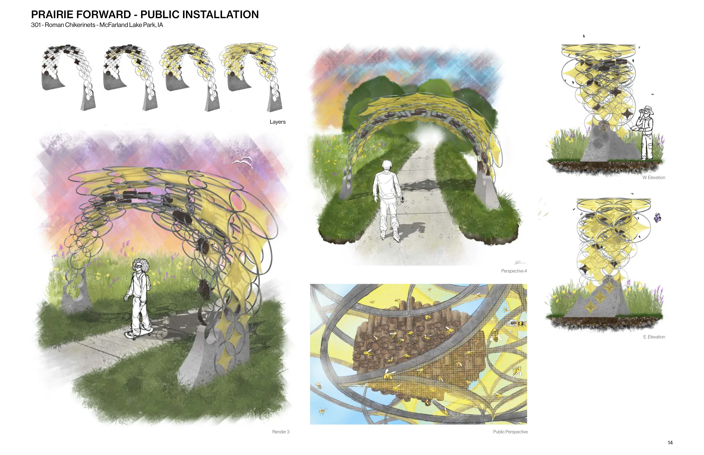
ISU ARBORETUM - PUBLIC PAVILION
202 - Reinaldo Correa-Diaz - Iowa State University Arboretum, IA
Inspired by the ergonomic functionality of the Gufram Pratone chair by Pietro Derossi, I created a number of biophilic coverage examples to determine which system was touched and interacted with the most.
Testing the durability and flexibility of various types of cardboard garnered a new appreciation for the malleability of the material. Slicing the cardboard along the corrugation lines allowed the material to bend on one axis and maintain structural integrity along every other axis.
A scaled prototype of the design was produced along with drawings of the potential applications. Though successful, the reviewers couldn't help but fidget with the prior study models.
A pavilion and entrance path designed to gather attention from the street and guide the public to the main threshold of the arboretum.
Legible signage, a clear entrance point, and a gentle ramp offer an alternative to the current dangerous conditions that are a liability for the University.
A system of sensory walls utilizing the biophilic cardboard studies guide guests along the path, distracting them from the road and building anticipation for whatever lies beyond the pavilion bridge.
I chose to place my pavilion design in the Iowa State Arboretum because it holds a particularly special place in my heart. I have used the Arboretum as a comfort place to decompress and be with nature since my first week of University, and I have always felt that the location didn't receive the maintenance or public attention that it deserved.
Placing the pavilion before the bridge gave the public a glance of the space from the road, while hiding the main portion of the Arboretum until they get through the bridge section.
The interior of the pavilion features custom seating, tables, and mini library, as well as site maps marking the unique tree species from all over the world.
16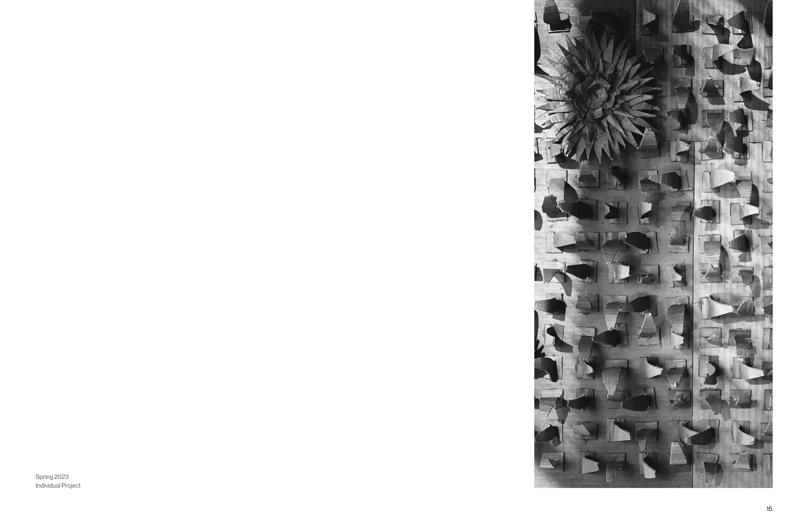
ISU ARBORETUM - PUBLIC PAVILION
202 - Reinaldo Correa-Diaz - Iowa State University Arboretum, IA
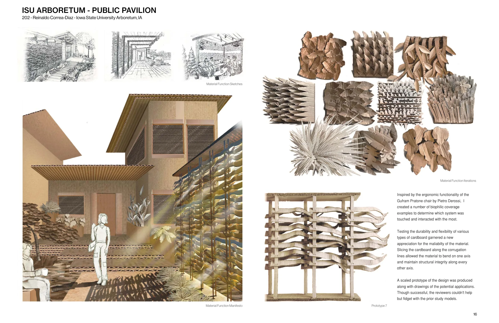
ISU ARBORETUM - PUBLIC PAVILION
202 - Reinaldo Correa-Diaz - Iowa State University Arboretum, IA
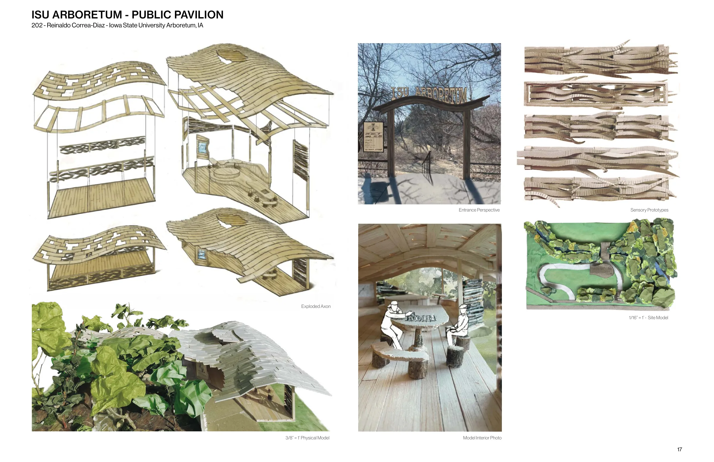
ISU ARBORETUM - PUBLIC PAVILION
202 - Reinaldo Correa-Diaz - Iowa State University Arboretum, IA
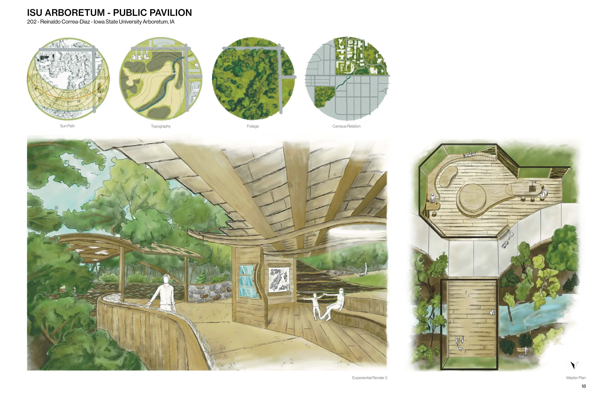
SEAN M. DAUGHERITY
Architecture Portfolio - selected works
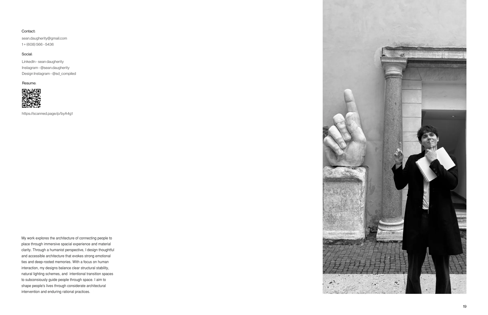